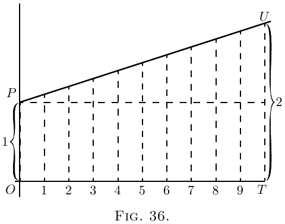
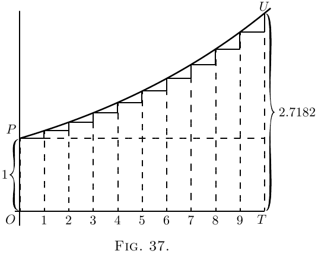
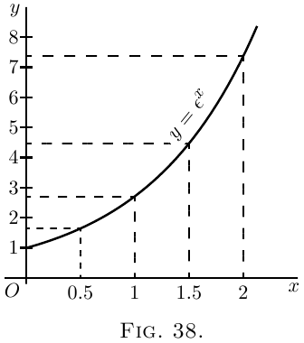
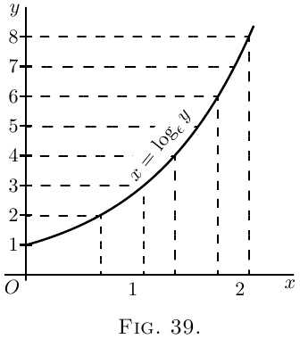

第 14 章(a) 复利与有机增长定律
设有一个量，其增长方式是：在给定时间内，增长的增量总是与其自身的大小成正比。这种增长方式类似于按照某个固定利率计算的货币利息：本金越大，在给定时间内的利息也越多。
现在，在计算中，我们必须明确区分两种情况，这取决于计算是按照“单利”进行的，还是按照“复利”进行的。因为在前一种情况下，本金保持不变；而在后一种情况下，利息被加入本金中，因此本金通过连续的累加而增长。
(1) 单利
考虑一个具体的例子。假设初始本金为 100，年利率为 10%。那么，本金的所有者每年都会获得 10 的增量。假设他每年提取利息并储存起来，例如放进一个袜子或锁在保险箱里。那么，如果他这样连续操作 10 年，到那时，他将收到 10 个 10 的增量，共计 100，加上最初的 100，总计 200。他的财产将在 10 年内翻倍。如果利率是 5%，他需要储存 20 年才能使财产翻倍。如果只有 2%，他需要储存 50 年。很容易看出，如果每年的利息是本金的 \(\dfrac{1}{n}\)，那么他需要储存 \(n\) 年才能使财产翻倍。
如果 \(y\) 表示初始本金，年利息是 \(\dfrac{y}{n}\)，那么在 \(n\) 年后，他的财产将为：
(2) 复利
和上面一样，假设所有者以 100 为本金，每年利率为 10%；但这次，他将利息加入本金中，这样本金逐年增长。于是，一年后，本金将增长到 110；第二年（仍为 10% 利率）这 110 将产生 11 的利息。他将在第三年开始时有 121，本金上的利息为 12.2，于是第四年开始时，他将拥有 133.2，如此类推。通过计算可以发现，在 10 年后，总本金将增长到 259.7。实际上，我们可以看到，每一年，每 1 元都将产生 \(\tfrac{1}{10}\) 元的利息，并且如果利息总是被加入本金，那么每一年将本金乘以 \(\tfrac{11}{10}\)，如果持续 10 年（即重复乘以该因子 10 次），本金将被乘以 \(2.59374\)。用符号表示：设 \(y_0\) 为初始本金，\(\dfrac{1}{n}\) 为每次操作的增加比例，\(y_n\) 为第 \(n\) 次操作结束时的本金值。则：
然而，这种一年一算的复利算法并不完全公平；因为即使是在第一年内，这 100 本应一直在增长。例如，到半年末，本金至少应该是 105，若在接下来的半年中按 105 计算利息才更为合理。这相当于每半年 5% 的利率；如此，在 20 次操作中，每次操作本金将被乘以 \(\tfrac{21}{20}\)。按照这种算法，10 年后本金将增长到 265.65；因为：
但即便如此，这个过程依然不够公平。例如，到了第一个月末，就应有一些利息产生，而半年一算的方式假设在六个月内本金保持不变。假如我们将一年分成 10 部分，每部分计算 1% 的月利率。那么在 10 年内将有 100 次操作：
计算结果为 270.95。
即使如此，这还不是最终结果。假如将 10 年分成 1000 部分，每部分为一年的 \(\frac{1}{100}\)，每部分计算 \(\frac{1}{10}\)% 的利率，那么：
结果为 \(271.13\)。
若进一步细分，将 10 年分成 10,000 部分，每部分为一年的 \(\tfrac{1}{10000}\)，则：
结果为 271.16。
最终可以看出，我们实际上试图找到表达式 \(\left(1 + \dfrac{1}{n}\right)^n\) 的极限值，我们会看到，该值大于2。随着 \(n\) 越来越大，该表达式的值会越来越接近某个特定的极限值。无论 \(n\) 多大，该表达式的值都越来越接近于：
这是一个永远值得铭记的数字。
我们用几何图示来说明这些概念。在图36中，\(OP\) 表示初始值，\(OT\) 是数值增长所经历的整个时间。该时间被分为 10 个等间隔的时间段，每个时间段的增量相等。在这里，\(\dfrac{dy}{dx}\) 是一个常数。如果每个增量是初始值 \(OP\) 的 \(\frac{1}{10}\)，那么通过 10 个这样的增量，数值的高度将加倍。如果我们分成 20 个增量，每个增量的高度是图中显示的一半，最后的高度仍然会恰好加倍。或者，分成 \(n\) 个增量，每个增量是初始高度 \(OP\) 的 \(\dfrac{1}{n}\)，仍然可以使高度加倍。这就是单利的情况。这里是一个数值从 1 增长到 2。

在图 37中，我们有一个几何级数的对应图示。每个连续纵坐标的高度是 \(1 + \dfrac{1}{n}\)，即其前一纵坐标的 \(\dfrac{n+1}{n}\) 倍。这些增量并不相等，因为现在每个增量是曲线该部分纵坐标的 \(\dfrac{1}{n}\)。如果我们真的取 10 个增量，并以 \(\left(1 + \frac{1}{10} \right)\) 作为增长因子，那么最终的总值将是：\((1 + \tfrac{1}{10})^{10}\)，或者是原始值的 \(2.594\) 倍。但如果我们将 \(n\) 取得足够大（相应地 \(\dfrac{1}{n}\) 足够小），那么 \(1\) 最终将增长到 \(\left(1 + \dfrac{1}{n}\right)^n\) 的值，而这个值将趋近于 \(2.71828\)。

Epsilon
对于这个神秘的数字 \(2.7182818\)...，数学家们用希腊字母 \(\epsilon\)（读作 epsilon）来表示。所有学生都知道希腊字母 \(\pi\)(读作pi)代表 \(3.141592\)...，但有多少人知道epsilon 代表 \(2.71828\) 呢？然而，这个数字甚至比 \(\pi\) 更重要！
那么，epsilon到底是什么呢？
假设我们让 \(1\) 按照单利增长，直到它变为 \(2\)；然后，如果以相同的名义利率，并在相同的时间内，让 \(1\) 按真正的复利增长而不是单利增长，它将增长到值 epsilon。
有人把这种在每一时刻成比例地增长的过程称为对数增长速率。单位对数增长速率是在单位时间内能使 \(1\) 增长为 \(2.718281\) 的速率。这种增长方式也可以称为有机增长速率，因为有机增长的特征（在某些情况下）就是在给定时间内，生物体的增量与生物体本身的大小成正比。
如果我们将 100% 作为速率单位，将任意固定时间作为时间单位，那么让 \(1\) 以算术速率在单位时间内增长，结果是 \(2\)；而让 \(1\) 以对数速率在相同时间内增长，结果是 \(2.71828\ldots\)。
关于 Epsilon 的一点补充我们已经看到，我们需要知道当 \(n\) 变得无限大时，表达式 \(\left(1 + \dfrac{1}{n}\right)^n\) 达到的值。算术上，我们可以通过一张普通的对数表，计算出 \(n = 2\)，\(n = 5\)，\(n = 10\)，一直到 \(n = 10,000\) 时的数值，并将其汇总成表格。
然而，可以用另一种方式来计算这个极其重要的数字。
我们将利用二项式定理展开表达式 \(\left(1 + \dfrac{1}{n}\right)^n\)。
二项式定理的规则是：
将 \(a = 1\)，\(b = \dfrac{1}{n}\)，我们得到：
现在，如果假设 \(n\) 无限大，比如达到十亿，或者十亿的十亿倍，那么 \(n - 1\)，\(n - 2\)，\(n - 3\) 等都可以近似看作 \(n\)，于是这个级数变成：
通过取这个快速收敛的级数的任意多项，我们可以将其求和至任意所需的精度。以下是用十项的计算结果：
| \(1.000000\) | |
|---|---|
| 除以 1 | \(1.000000\) |
| 除以 2 | \(0.500000\) |
| 除以 3 | \(0.166667\) |
| 除以 4 | \(0.041667\) |
| 除以 5 | \(0.008333\) |
| 除以 6 | \(0.001389\) |
| 除以 7 | \(0.000198\) |
| 除以 8 | \(0.000025\) |
| 除以 9 | \(0.000002\) |
| 总计 | \(2.718281\) |
\(\epsilon\) 是不可通约的，与 \(1\) 无法整除，并且类似 \(\pi\)，是一个无穷的、非循环的小数。
指数级数
我们还需要另一个级数。
再次利用二项式定理展开 \(\left(1 + \dfrac{1}{n}\right)^{nx}\)，当 \(n\) 无限大时，这等同于 \(\epsilon^x\)。
当 \(n\) 无限大时，这个表达式简化为：
这个级数称为指数级数。
\(\epsilon\) 被认为重要的主要原因是 \(\epsilon^x\) 具 有一种其他 \(x\) 的函数所不具备的性质：它的微分值与其自身相同。换句话说，它的导数和原函数是一样的。这可以通过对 \(x\) 求导立即看出：
这个结果与原来的级数完全相同。
现在我们也可以反过来思考：假设我们希望找到一个 \(x\) 的函数，其导数与其本身相等。那么是否存在一个仅由 \(x\) 的幂次项组成的表达式，在求导后保持不变？为此，我们假设一个一般表达式：
(其中系数 \(A\)，\(B\)，\(C\) 等需要确定），然后对其求导。
如果这个新的表达式确实与其原函数相同，那么很明显：\(A = B\)，\(C=\dfrac{B}{2}=\dfrac{A}{1· 2}\)，\(D = \dfrac{C}{3} = \dfrac{A}{1 · 2 · 3}\)，\(E = \dfrac{D}{4} = \dfrac{A}{1 · 2 · 3 · 4}\) ...
因此变化规律是：
如果为了进一步简化取 \(A = 1\)，我们得到：
不管求几次导数，都会得到相同的级数。
如果我们取 \(A = 1\) 的特殊情况，并计算这个级数，结果是：
当 \(x = 1\) 时，\(y = 2.718281\ldots\)，即 \(y = \epsilon\)；
当 \(x = 2\) 时，\(y =(2.718281 \ldots)^2\)，即 \(y = \epsilon^2\)；
当 \(x = 3\) 时，\(y =(2.718281 \ldots)^3\)，即 \(y = \epsilon^3\)；
因此：当 \(x=x\) 时，\(y=(2.718281 \ldots)^x\)，即 \(y=\epsilon^x\)。
因此我们最终证明了：
如何阅读指数
对于没有导师指导的学习者来说，以下注释可能有用：“\(\epsilon^x\)”读作“epsilon 的 \(x\) 次幂”；也有人读作“指数 \(x\)”。所以 \(\epsilon^{pt}\) 读作 “epsilon的pt次幂”或“指数pt” 。例如，\(\epsilon^{-2}\) 读作“\(\epsilon\) 的负二次幂”或“指数负二”。类似地，\(\epsilon^{-ax}\) 读作“\(\epsilon\) 的负 \(a\) 倍 \(x\) 次幂”或“指数负 \(a\) \(x\)”。
显然，\(\epsilon^y\) 对 \(y\) 求导时仍保持不变。而 \(\epsilon^{ax}\) 等于 \((\epsilon^a)^x\)，当对 \(x\) 求导时，其结果是 \(a\epsilon^{ax}\)，因为 \(a\) 是常数。
自然对数或奈普尔对数
\(\epsilon\) 重要的另一个原因是，它被对数的发明者奈普尔用作其系统的基数。如果 \(y\) 是 \(\epsilon^x\) 的值，那么 \(x\) 是以 \(\epsilon\) 为底的 \(y\) 的对数。也就是说：
则
这两个方程绘制的曲线见图38和图39中。
计算出的点是：
| \(x\) | \(0\) | \(0.5\) | \(1\) | \(1.5\) | \(2\) |
|---|---|---|---|---|---|
| \(y\) | \(1\) | \(1.65\) | \(2.71\) | \(4.50\) | \(7.39\) |
对应图38

| \(y\) | \(1\) | \(2\) | \(3\) | \(4\) | \(8\) |
|---|---|---|---|---|---|
| \(x\) | \(0\) | \(0.69\) | \(1.10\) | \(1.39\) | \(2.08\) |
对应图39

可以看出，尽管计算得出的用于绘图的点不同，但结果实际上是相同的。这两个方程表达的是相同的含义。
由于许多人使用的是以 \(10\) 为底的普通对数，而不是以 \(\epsilon\) 为底的“自然”对数，因此有必要对自然对数进行一些说明。普通对数中的规则——对数相加等于乘积的对数——在这里仍然适用，即：
幂的规则也同样适用：
但是，由于基数不再是 \(10\)，不能简单地通过在指数上加 \(2\) 或 \(3\) 来实现乘以 \(100\) 或 \(1000\)。可以通过将自然对数乘以 \(0.4343\) 将其转换为普通对数，公式为：
反之亦然：
一张有用的“奈普尔对数”表
(也称为自然对数或双曲对数)
| Number | \(\log_{\epsilon}\) | Number | \(\log_{\epsilon}\) | |
|---|---|---|---|---|
| \(1 \) | \(0.0000\) | \(6\) | \(1.7918\) | |
| \(1.1\) | \(0.0953\) | \(7\) | \(1.9459\) | |
| \(1.2\) | \(0.1823\) | \(8\) | \(2.0794\) | |
| \(1.5\) | \(0.4055\) | \(9\) | \(2.1972\) | |
| \(1.7\) | \(0.5306\) | \(10\) | \(2.3026\) | |
| \(2.0\) | \(0.6931\) | \(20\) | \(2.9957\) | |
| \(2.2\) | \(0.7885\) | \(50\) | \(3.9120\) | |
| \(2.5\) | \(0.9163\) | \(100\) | \(4.6052\) | |
| \(2.7\) | \(0.9933\) | \(200\) | \(5.2983\) | |
| \(2.8\) | \(1.0296\) | \(500\) | \(6.2146\) | |
| \(3.0\) | \(1.0986\) | \(1000\) | \(6.9078\) | |
| \(3.5\) | \(1.2528\) | \(2000\) | \(7.6009\) | |
| \(4.0\) | \(1.3863\) | \(5000\) | \(8.5172\) | |
| \(4.5\) | \(1.5041\) | \(10 000\) | \(9.2103\) | |
| \(5.0\) | \(1.6094\) | \(20 000\) | \(9.9035\) |
指数和对数方程
现在，我们尝试对包含对数或指数的某些表达式进行微分。
考虑以下方程：
首先将其变形为：
因此，由于 \(\epsilon^y\) 对 \(y\) 的微分仍然是原函数本身
然后从反函数返回到原函数：
这是一项非常奇特的结果。它可以写作：
注意，这个 \(x^{-1}\) 的结果是无法通过微分幂的规则得到的。该规则是用幂乘以系数，然后将幂减一。例如，微分 \(x^3\) 得到 \(3x^2\)，微分 \(x^2\) 得到 \(2x^1\)。但是，微分 \(x^0\) 并不会得到 \(x^{-1}\) 或 \(0 × x^{-1}\)，因为 \(x^0 = 1\)，是一个常数。我们将在积分一章中回到这个奇特的事实，即微分 \(\log_\epsilon x\) 得到 \(\dfrac{1}{x}\)。
现在，尝试对以下函数求导：
即
因此，有：\(\dfrac{d(x+a)}{dy} = \epsilon^y\)，因为 \(\epsilon^y\) 的导数仍然是 \(\epsilon^y\)。这就得出：
因此，返回到原函数，我们得到：
接下来，尝试：
首先，通过乘以模数 \(0.4343\) 将其转化为自然对数。这给出：
因此：
下一步稍微复杂一些。尝试以下函数：
对两边取对数，得到：
因为 \(\dfrac{1}{\log_\epsilon a}\) 是一个常数，因此：
因此，返回到原函数：
我们看到，由于：
我们会发现，只要有一个类似于 \(\log_\epsilon y =\) 一个关于 \(x\) 的函数的表达式时，总有：\(\dfrac{1}{y}\, \dfrac{dy}{dx} =\) 该函数关于 x 的导数，因此我们可以直接从：\(\log_\epsilon y = x \log_\epsilon a\) 写出：
现在我们尝试更多的例子。
例子
(1) \(y=\epsilon^{-ax}\).令 \(-ax=z\)，则 \(y=\epsilon^z\)。
因此：
(2) \(y=\epsilon^{\frac{x^2}{3}}\)，令 \(\dfrac{x^2}{3}=z\)，即 \(y=\epsilon^z\)。
因此：
(3) \(y = \epsilon^{\frac{2x}{x+1}}\)。
通过令 \(\dfrac{2x}{x+1}=z\) 来验证。
(4) \(y=\epsilon^{\sqrt{x^2+a}}\). \(\log_\epsilon y=(x^2+a)^{\frac{1}{2}}\).
如果设 \((x^2+a)^{\frac{1}{2}}=u\)，\(x^2+a=v\)，则 \(u=v^{\frac{1}{2}}\),
令 \(\sqrt{x^2+a}=z\) 来验证。
(5) \(y=\log(a+x^3)\).
令 \((a+x^3)=z\)，则 \(y=\log_\epsilon z\)。
(6) \(y=\log_\epsilon\{{3x^2+\sqrt{a+x^2}}\}\).
令 \(3x^2 + \sqrt{a+x^2}=z\)，则 \(y=\log_\epsilon z\)。
(7) \(y=(x+3)^2 \sqrt{x-2}\).
(8) \(y=(x^2+3)^3(x^3-2)^{\frac{2}{3}}\)。
如果 \(y=\log_\epsilon(x^2+3)\)，令 \(x^2+3=z\)，则 \(u=\log_\epsilon z\)。
同样，如果 \(v=\log_\epsilon(x^3-2)\)，\(\dfrac{dv}{dx} = \dfrac{3x^2}{x^3-2}\) 且
(9) \(y=\dfrac{\sqrt[2]{x^2+a}}{\sqrt[3]{x^3-a}}\).
(10) \(y=\dfrac{1}{\log_\epsilon x}\)
(11) \(y=\sqrt[3]{\log_\epsilon x} = (\log_\epsilon x)^{\frac{1}{3}}\)
令 \(z=\log_\epsilon x\); \(y=z^{\frac{1}{3}}\)。
(12) \(y=\left(\dfrac{1}{a^x}\right)^{ax}\)。